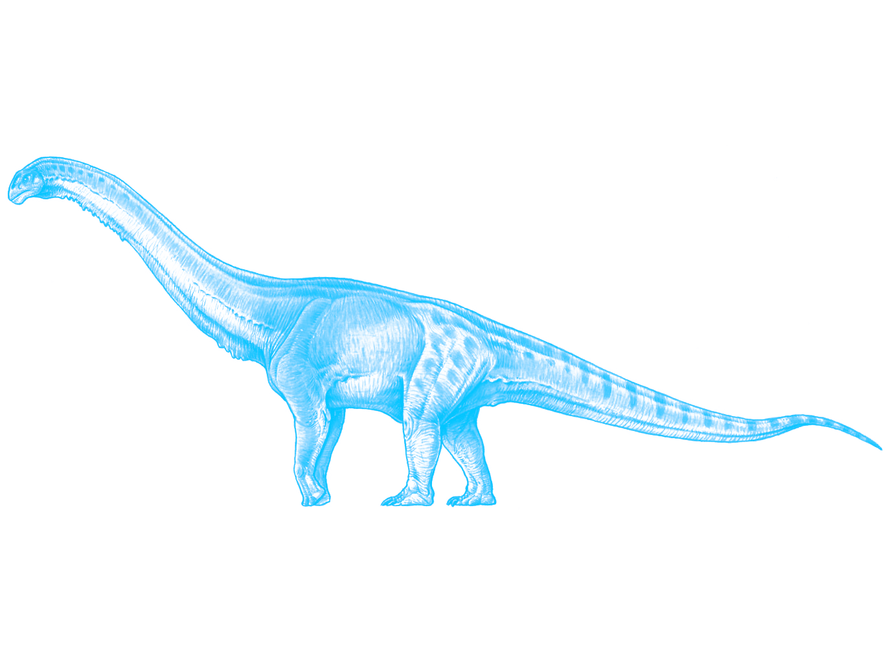

what is a book anyways?

It was the Ides of March, and I ventured outside. I wanted to print some labels for a personal project at Copies Concordia. It was sunny, but there was a crip wind that slapped you in the face and made your cheeks kind of numb. There were a lot of people downtown. The seriousness of the situation hadn’t set in yet. ***
In the city where I was born, BenXi, there were people with little carts full of books. They would roam the neighborhoods and yell at the windows that they were selling books. Sometimes, they would even go door to door. My mom bought me two books with a lot of pictures. And so, the first book I read was an encyclopedia of animals. The second book I read was about dinosaurs. I think this was in 1997-1998. I cut some of the animals out, and I was sad to find that this ruined the contents on the other side. ***